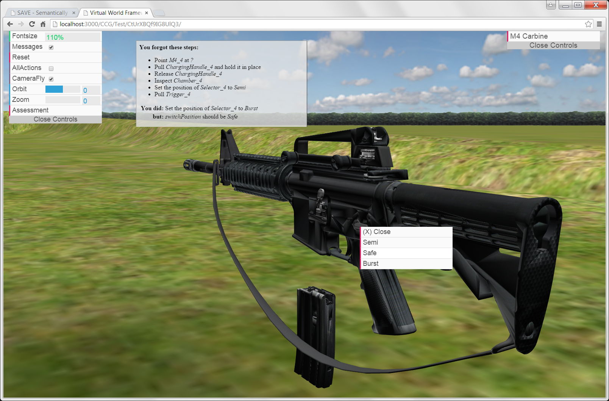

Exercise UI (EUI) - Student Mode
The EUI allows you, as the student, to perform the exercise and afterwards be assessed against the instructor's solution.
- The EUI is launched by selecting an exercise URL. Click the 'Select Exercise' button below the image.
- Click the Reset button once after the scene loads to refresh the assessment engine.
- Load objects into the scene by selecting available assets (e.g. M4 Carbine) in the EUI upper-right corner.
- Click on the relevant areas of the object to initiate actions. A context menu shows the available actions.
- Perform the exercise steps in the proper sequence.
- When complete, select the Assessment button in the EUI upper-left corner to receive feedback.
Result: the assessment is displayed in a window within the EUI, summarizing any errors that made.